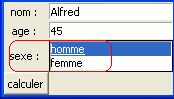
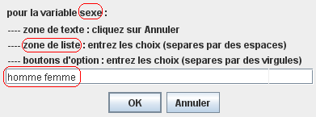

Formulaires

L'option de saisie "formulaire" permet, sauf pour certains langages (Algobox, Larp, Visual Basic),
de créer un formulaire de saisie :
-
Complétez l'onglet "Principal" (exemple 1,
exemple 2).
-
Cliquez sur le bouton Nouveau.
-
Indiquez pour chaque variable de type texte le composant à lui associer
(zone de texte, zone de liste ou boutons d'options).
